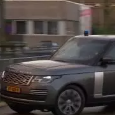

stad
Aanrijding met auto van gedetineerdetransport bij A9, één persoon naar het ziekenhuis
11C
0.0km
Goed
Aanrijding met auto van gedetineerdetransport bij A9, één persoon naar het ziekenhuis
Stichting wilt dat Vliegenbos weer groen en donker wordt:"Het is inmiddels een park geworden
Ihattaren dag na aanhouding weer op vrije voeten
Kijken naar koppen: kroeg vol Mexicanen door het dolle na gemiste penalty
Winnaars Emmy-award warm onthaald: "Net of we hem weer opnieuw winnen, ongelooflijk"
Mogelijk explosieven gevonden in gebouw aan Bijlmerplein
Aanrijding met auto van geditineerdetransport bij A9, één persoon naar het ziekenhuis
24.000 euro armer na babbeltruc: "Deel was bedoeld voor mijn kleinkinderen"
Ontsnapte serval Petunia terug bij eigenaren:"Het is net een kind"
Mogelijk explosieven gevonden in gebouw aan Bijlmerplein
Amsterdammers doneren massaal energiekorting:'Dit overtreft onze verwachtingen'
Ontsnapte serval Petunia terug bij eigenaren:"Het is net een kind"
PvdA en Groenlinks: meer woningbouw mogelijk als Schiphol krimpt
Gemeente wilt andere verdeling jongeren/statushouders in grote gemengd wooncomplexen
Zeki wilt monument voor gastarbeiders:"Ze moeten ook eens in het zonnetje"
24.000 euro armer na babbeltruc: "Deel was bedoeld voor mijn kleinkinderen"
CBS: bijna 900.000 mensen willen verhuizen, maar kunnen geen woning vinden
Café de Zwart viert honderdjarig bestaan: "Het is thuiskomen"
Politie houdt 25-jarige Almeerder aan in zaak doodgeschoten Rodney Mijnals